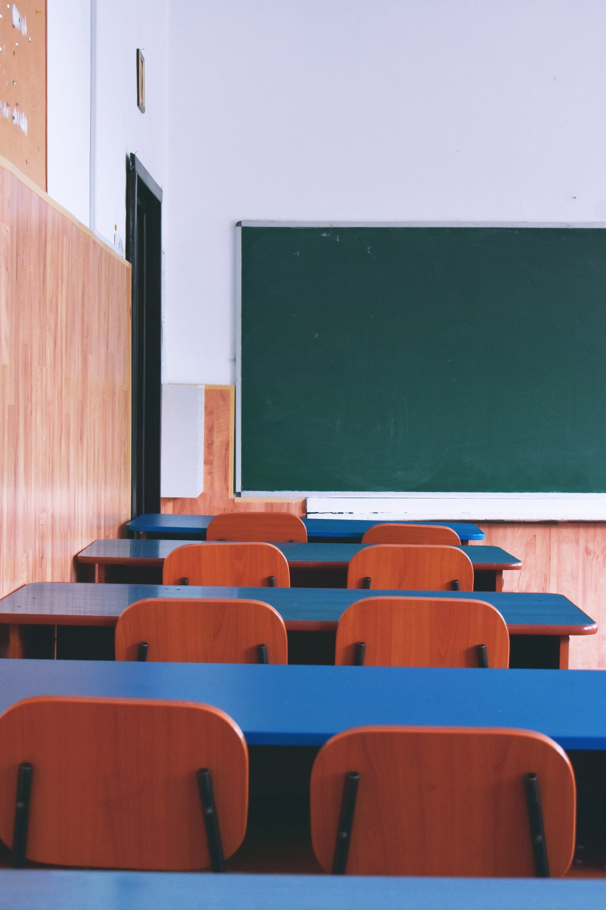

¿Quiénes somos?
Somos un espacio de aprendizaje para aprender italiano. La institución está coordinada por reconocidas profesoras y traductoras universitarias de amplia trayectoria en la ciudad de La Plata.
El enfoque de los programas es comunicativo, y en ellos aspiramos a que los alumnos adquieran un rol protagónico y participen en forma dinámica en sus procesos de aprendizaje mediante la puesta en práctica de debates, dramatizaciones y simulaciones.

¿Qué ofrecemos?
Contamos con un espacio de recepción agradable
y cuatro cómodas aulas climatizadas y equipadas
con pizarras blancas, televisores inteligentes
y con el equipamiento técnico actual e indispensable para lograr un aprendizaje significativo.
Las actividades incluyen la aplicación de las nuevas tecnologías de la información y la comunicación (TICs) a modo de soporte para promover experiencias innovadoras y mejorar la calidad de la enseñanza. Las herramientas que proporcionan las TICS permiten que los estudiantes entren en contacto con las múltiples representaciones de la realidad y que se les facilite la construcción de conocimiento.